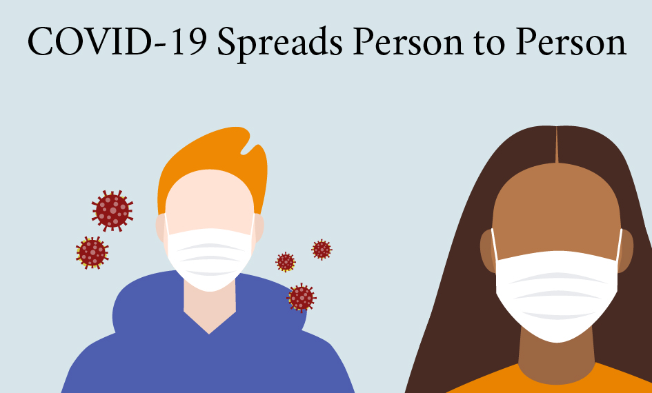

How COVID-19 Spreads
COVID-19 spreads when an infected person breathes out droplets and very small particles that contain the virus.
These droplets and particles can be breathed in by other people or land on their eyes, noses, or mouth.
In some circumstances, they may contaminate surfaces they touch.
People who are closer than 6 feet from the infected person are most likely to get infected.
COVID-19 is spread in three main ways:
- Breathing in air when close to an infected person who is exhaling small droplets and particles that contain the virus.
- Having these small droplets and particles that contain virus land on the eyes, nose, or mouth, especially through splashes and sprays like a cough or sneeze.
- Touching eyes, nose, or mouth with hands that have the virus on them.
